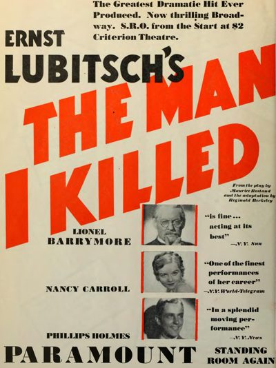

Broken Lullaby
Starring: Lionel Barrymore, Nancy Carroll, Phillips Holmes
Director: Ernst Lubitsch
Writer: Samson Raphaelson
Producer: Ernst Lubitsch

Broken Lullaby (a.k.a. The Man I Killed) is a 1932 American pre-Code drama film directed by Ernst Lubitsch and released by Paramount Pictures. The screenplay by Samson Raphaelson and Ernest Vajda is based on the 1930 play L'homme que j'ai tué by Maurice Rostand and its 1931 English-language adaptation, The Man I Killed, by Reginald Berkeley.
Trivia
- The film's original title, The Man I Killed, was changed to The Fifth Commandment to avoid giving "wrong impressions in the minds of the public about the character of the story." It ultimately was released as Broken Lullaby.
- The film was presented at the Venice International Film Festival.
- According to The Hollywood Reporter, Czechoslovakia banned the film due to its "pacifistic theme". It was screened at the 2006 San Sebastián International Film Festival as part of an Ernst Lubitsch retrospective.
Previous Showings
3 Runs • 2 Festivals
Original Billings: 1 run (March 21, 1932)
Original Run: March 21, 1932 (Sunday - Tuesday)
All runs on record (3):
- March 21, 1932 (Sunday - Tuesday)Lionel Barrymore
- February 16 - 17, 2017British and Lubitschw/ The Smiling Lieutenant
- April 3 - 4, 2025Lubitsch, Mamoulian, Sternberg Three Great Directorsw/ An American Tragedy